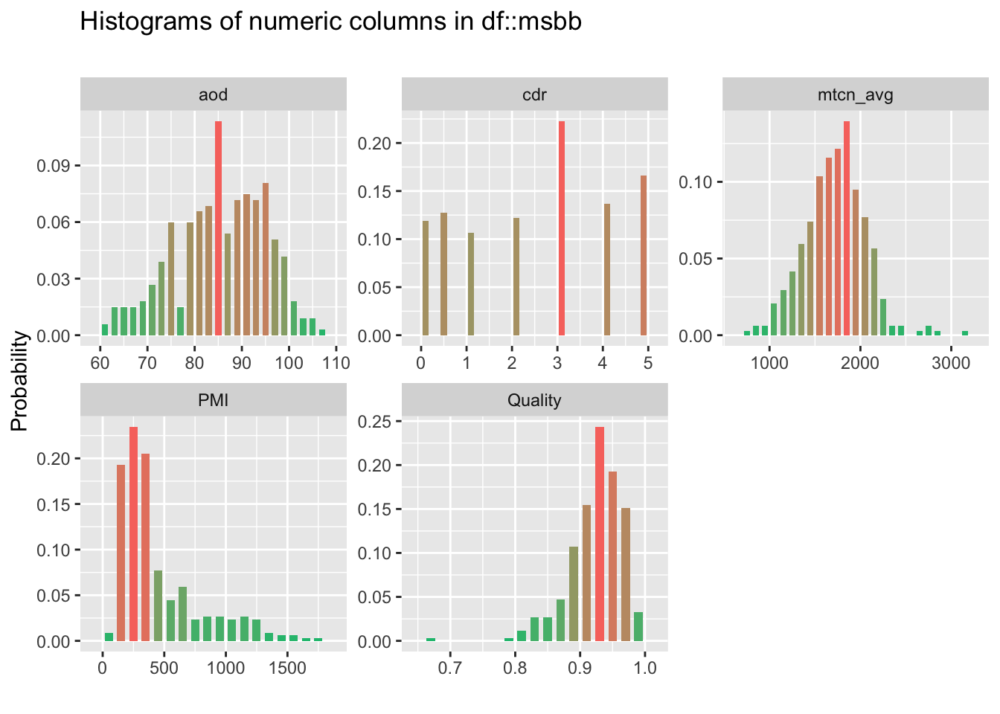
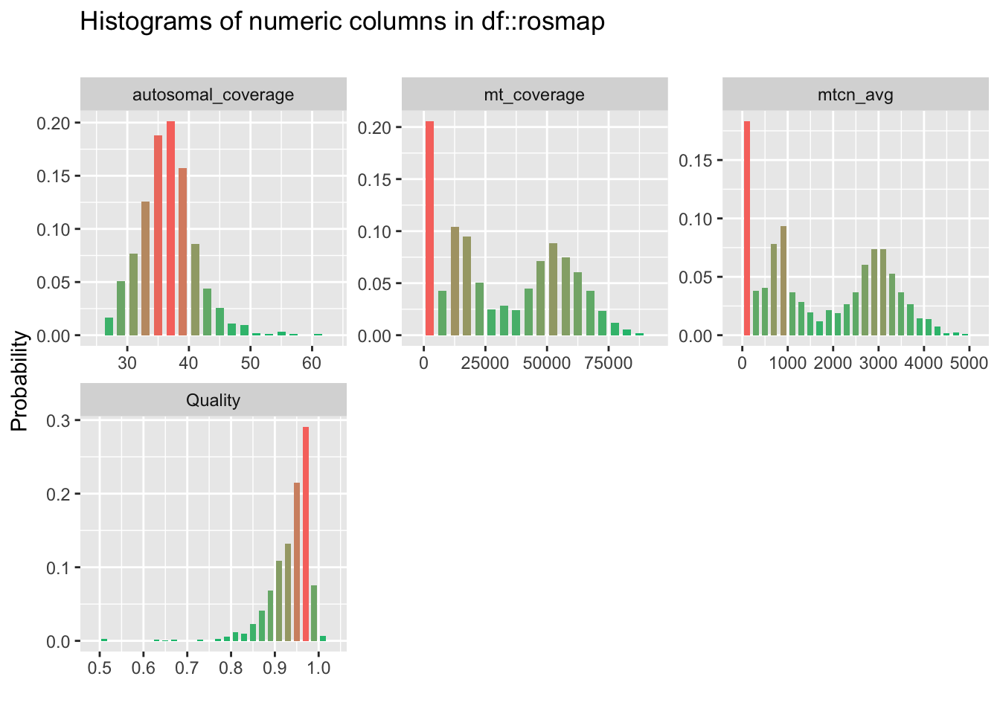

4.2 Other Variables
| col_name | min | q1 | median | mean | q3 | max | sd | pcnt_na |
|---|---|---|---|---|---|---|---|---|
| PMI | 75.00 | 220.00 | 315.00 | 445.56 | 550.00 | 1800.00 | 334.94 | 0.00 |
| cdr | 0.00 | 1.00 | 3.00 | 2.46 | 4.00 | 5.00 | 1.71 | 0.00 |
| aod | 61.00 | 79.00 | 85.00 | 84.93 | 92.50 | 108.00 | 9.61 | 0.59 |
| mtcn_avg | 734.20 | 1513.48 | 1732.57 | 1720.37 | 1921.49 | 3151.59 | 335.96 | 0.00 |
| Quality | 0.67 | 0.90 | 0.93 | 0.92 | 0.95 | 1.00 | 0.04 | 0.00 |

## Note: Using an external vector in selections is ambiguous.
## ℹ Use `all_of(msbb_vars)` instead of `msbb_vars` to silence this message.
## ℹ See <https://tidyselect.r-lib.org/reference/faq-external-vector.html>.
## This message is displayed once per session.